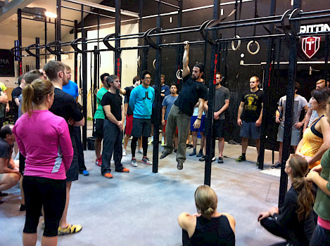

We are entering the second week of the Hanging Challenge and it is going strong!
7000 active members have joined the Movement Culture group on Facebook and are posting photos, questions and tips, sharing information about their daily Movement Practice.
Many are reporting great benefits already - just after a few days of hanging. Here is one recent testimonial posted today:
"I'm on day 6 and I will say this; I've been having shoulder problems for a few years now. My shoulders have hurt a great deal. This is especially true when I sleep. Almost every morning, what wakes me up is shoulder pain. I can't find many positions where they don't hurt when lying down and rolling over in the night usually disturbs my sleep, just from the discomfort of my shoulders.
I've done some ART when things get really bad and that was surprisingly helpful. However, since starting this challenge, my shoulders have improved DRAMATICALLY. I am not having morning shoulder pain at all. I've been able to actually sleep on my stomach, which was completely undoable due to shoulder issues before this challenge. These benefits were noticeable after day 3 or so. That's pretty impressive. Thank you Ido Portal."
New materials for your Hanging Practice
Arching Active Hang
I've been using this Straight Arm Scapular Strength movement for many many years now. (over 10 years)
It is NOT a Front Lever Pull and should not be performed with straight legs and body but in an arched position while maximizing the RETRACTION. Any attempt to lift the body in a Front Lever will take away from the retraction and not prioritize it.
The movement is not for beginners. Sufficient practice with the basic Active Hang is a must. Also - if you are worried by the arch and suspect back pain - you have no business attempting this movement, better take care of your spine first as a healthy back of a mover should be able to assume such a position without discomfort. (note: the spine is not loaded much during the Arching Active Hang)
Uses of the Arching Active Hang are many - it is a great plateau buster for both Straight Arm Pulling Strength AND Bent Arm Pulling Strength. It can be a great addition to the development of a Front Lever as well as advanced Pulling work such as a One Arm Chin Up.
The Arching Active Hang is also a great re/prehab movement and a postural tool. (as weird as it may sound for many who are obsessed with fixing the spine in a neutral position ALL the time)
The Arching Active Hang works hard scapular Depression and Retraction as well as cuing the upper arm into External Rotation - a good diet for most poor postures you see out there - taking you out of that protraction/elevation/internal rotation 'sitting all day on my ass syndrome'.
The Movement is usually held for time or practiced for reps with a static pause of 1-10 sec at the top contraction. Sets are 3-10 in most cases and it can be used anywhere from twice a week to everyday, depending on context of the program and the individual applying.
Important note: many THINK they achieve retraction in this movement, few actually DO. If you cannot retract - even somewhat you should not work on this variation yet, better to keep it real and make progress.
Front Stationary Swing
This movement have been made famous by the Crossfit industry but it is as old as apes. Nowadays it is performed mostly poorly with little attention to body positioning, quality of articulation and with too much aggression and lack of control while most of the practitioners applying it present poor shoulder/t-spine biomechanics. Many are overweight.
This explosive combination was the main reason it got a bad rep.
I will definitely not start people with this movement and will first require enough Passive and Active Hangs experience, good T-spine mobility, stable shoulders and understanding of the biomechanics and pathway.
If all those have been addressed, the Front Stationary Swing should be non problematic and actually important in the development of dynamic hanging/pulling work later on.
Application will usually be for time/reps and performed NEVER to failure.
Implementation
Beginner (Healthy shoulders)
A1 Passive Hang (or Assisted Partial Weight Passive Hang with feet on the floor/box) X 3 min in as few sets as possible
B1 Active Hang X 6-12 reps with 3 sec pause at the top of each rep X 3 sets
C1 Side to Side Stationary Swing X 30 sec X 3 sets
D1 Front Stationary Swing X 30 sec X 3 sets
This represents over 7 min of total hanging time (the daily recommended dose for the Hanging Challenge) and can be spread throughout the day into 1-3 sessions. You can perform 1 set of each exercise according to the order or go at each drill and finish all the sets before moving on to the next drill. Rest periods should be 1:1 - 1:2 work:rest ratio, so if hanging for 60 sec, rest 60-120 sec.
Intermediate (Healthy shoulders)
A1 Passive Hang X 150 sec -> complete as quickly as possible, optimally without coming down!
B1 Arching Active Hang X 5-8 reps with a 3 sec pause at the top of each rep X 4 sets
C1 Side to Side Stationary Swing X 30 sec + Front Stationary Swing X 30 sec X 2 sets
This represents over 7 min of total hanging time (the daily recommended dose for the Hanging Challenge) and can be spread throughout the day into 1-3 sessions. You can perform 1 set of each exercise according to the order or go at each drill and finish all the sets before moving on to the next drill. Rest periods should be 1:1 - 1:1.5 work:rest ratio, so if hanging for 60 sec, rest 60-90 sec, in the Arching Active Hang use at least 90 sec between sets as it is higher intensity work.
Now, go try those new drills and perhaps one of those programs, join us at the Movement Culture group and post your experiences and/or any questions you might have.
Share the Hanging Challenge with your friends, family and loved ones,
stay on the move,
Ido.